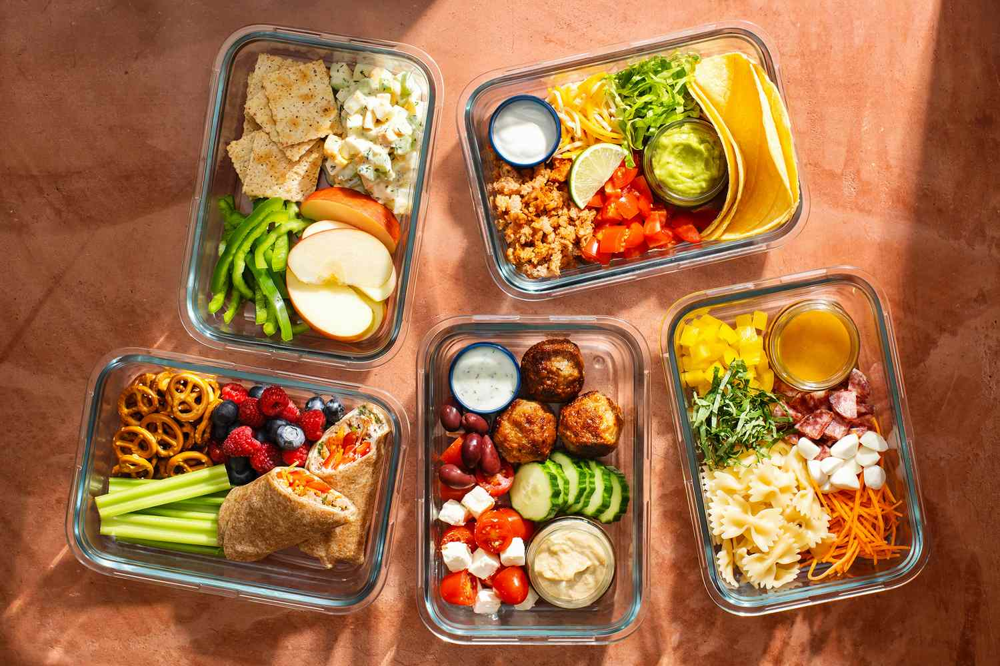
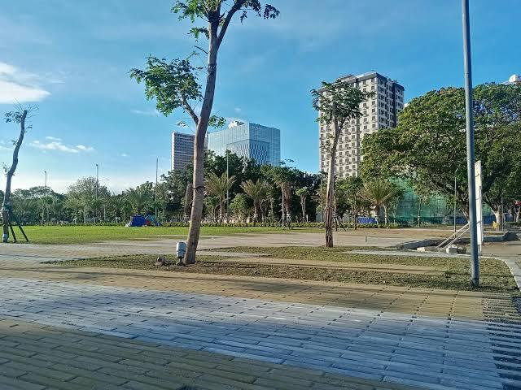
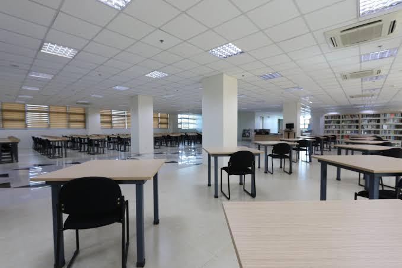
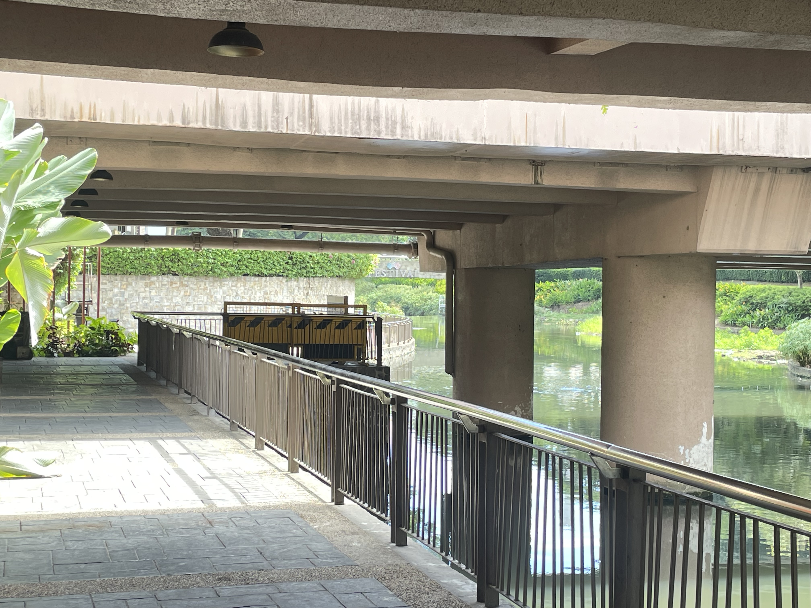

Student Toolkit
Free tools every student should bookmark
Quizlet, Coursera, Google Scholar and ChatGPT, and how to use each one without paying.
Read More →Your all-in-one survival kit for FEU Alabang. Must-know websites, places around campus, budget meal ideas and study help, all in one place and all free.
Find Food Spots →Pick a category and get what you need in a few clicks.
Quizlet, Coursera, Google Scholar and ChatGPT, and how to use each one without paying.
Read More →
Plan seven days of meals before your allowance runs out.
Read More →
Quiet places near campus where you can read, plus the ones that are better for a break.
Read More →Everything in one place, so you stop digging through group chats.
Budget tips and cheap eats so your allowance lasts the month.
Picked and checked by students who have been there.
Four websites that cover most of what you'll need in college: memorizing, learning new skills, finding research and getting unstuck. Pick one and try it today.
Make flashcards or use sets other students already made, then quiz yourself before exams.
Tip: Search your subject first. Someone may have already made the set.
Visit Quizlet →Take online courses from universities and companies to pick up skills your syllabus doesn't cover.
Tip: Preview a course first, and apply for financial aid before you pay for anything.
Visit Coursera →Search journal articles, theses and books for your papers, then use Cite to start your reference list.
Tip: Click Cite for a ready-made citation, then double-check it. Citations are a good starting point, not always correct (University of Utah guide).
Visit Google Scholar →Ask questions, get a tricky topic explained simply, brainstorm ideas and check your understanding.
Tip: Don't paste personal information. Free accounts are used for model training by default, and you can opt out under Settings > Data Controls.
Visit ChatGPT →Find your sources on Google Scholar.
Understand hard parts by asking ChatGPT to explain them.
Memorize key terms with Quizlet flashcards.
Level up with a Coursera course when you want more.
Free spots near FEU Alabang to study, chill or take a break. Each card tells you what you can do there and what to keep in mind.
Festival Mall, Corporate Avenue, Filinvest City, Alabang, Muntinlupa
Part of Festival Mall's grounds, River Park is the easy place to slow down after class. Picture wide green lawns, a calm water channel and a boardwalk with restaurants and shops, so a snack or a full meal is never far away. Come to unwind with friends, take a walk, or just sit on the grass and let the day cool down.

Central Park, Filinvest City, Alabang, Muntinlupa
Filinvest City's Central Park is a big, open city park where students come to breathe. With open lawns for picnics, paths for jogging and biking, an outdoor gym, playgrounds and themed gardens, there's a kind of break for everyone, from a quick walk to a long hangout with the barkada. The park also hosts community events during the year.

Room 1401, Wood District, Filinvest City
The library is your quiet corner on campus. Step into a bright, air-conditioned study hall with long tables, comfy chairs and shelves of books, and settle in for a focused session. It's open to students, faculty and employees, and if you're not sure where to start on a paper, the librarians are happy to help.

The covered walkway beside the creek, under the bridge, near the 7-Eleven. Walking time from campus: check when you visit.
A cool, shady spot for a quick breather. This covered walkway runs along the creek, tucked under the bridge, with greenery all around and a view of the water. It's close to the 7-Eleven, so you can grab a coffee, a snack or a cheap meal and enjoy it by the water.
| Spot | Hang out | Study | Eat & drink | Smoking | Good to know |
|---|---|---|---|---|---|
| River Park (Festival Mall) | Yes | Light reading only | Yes, restaurants on the boardwalk | Not unless a smoking area is posted | The mall is open 10 AM-9 PM daily |
| Central Park, Filinvest City | Yes | Light reading only | Picnics on the open lawns | Not unless a smoking area is posted | Open 6 AM-10 PM |
| FEU Alabang library | Quiet only | Yes, the best place | Ask the librarian | No | Call or email for hours |
| Creekside walkway | Yes, short breaks | No, there are no tables | Grab a coffee at the nearby 7-Eleven | Not unless a smoking area is posted | Shady and close to 7-Eleven |
Cheap meals, coffee and snacks near FEU Alabang, so your allowance lasts the month.
Download Budget TemplateDownloads a simple weekly tracker you can open in Excel or Google Sheets.
A simple way to split your allowance. Example: a weekly food allowance of ₱700 over 5 school days is about ₱140 a day.
Change the split to fit your own week, or download the template above to track it.
No. Prices change, so always check the tag at the store. Prices marked "about" come from third-party lists.
Reviewers mention one at Student Break. Show your valid ID and ask.
Student Break is dine-in and takeout only.